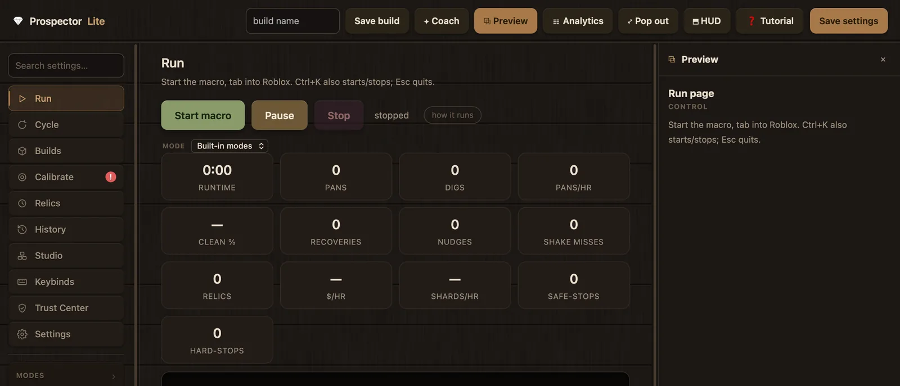
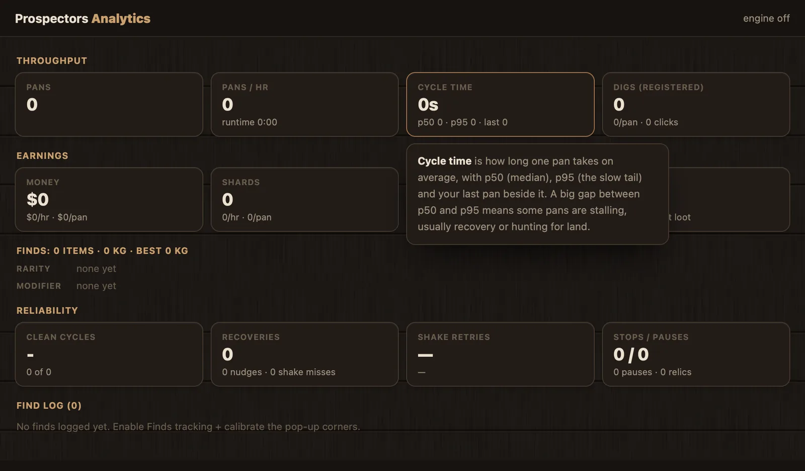

Prospector Lite watches the visible Prospecting screen through calibrated visual detection and plays the pan–dig–shake loop with ordinary keyboard and mouse input. No injection, no memory reading, no client modification — and nothing leaves your machine.
Version 5.0.0·Windows x64·macOS Apple Silicon·View source
FreeNo account, no access codeZero network by defaultSource available for inspection
Advanced Cue Matching · Pan · Deposit · Shake
Safe Stop · Esc releases every input
The product
Built for the full Prospecting loop.
Real screenshots from Prospector Lite 5.0.0 — the same build you download below.
Prospector Lite — Run

The control roomStart, pause and stop the loop; live counters track every pan, dig, recovery and safe-stop.
Prospectors Analytics

AnalyticsThroughput, earnings and reliability — computed locally, stored locally.
Prospector Lite setup — Guided Calibration
Guided CalibrationNumbered steps in order, one highlighted card at a time — with a View code button on every step.
Prospector Lite — Trust Center
Trust CenterEvery permission and byte stored, with live status and a real test behind each claim.
How it works
Pixels in. Keystrokes out. Nothing else.
Prospector Lite runs beside the game, not inside it. It reads the cues you can see — the capacity bar, the dig bar, the white Pan / Collect Deposit / Shake prompts — decides what a player would do next, and presses the same keys and mouse buttons you would. The same boundary a human at the keyboard has.
ScreenReads visible pixels of the display Roblox is on
Visual detectionCalibrated cues and letter-shape masks
Run logicBuilds, pacing, bounded recovery, watchdogs
InputOrdinary keyboard and mouse events
Capabilities
Detection you can trust, tools you can check.
Advanced Cue Matching
It matches the shape of the prompt, not one fragile pixel.
Instead of trusting a single white dot, Prospector Lite captures the actual letter shapes of the Pan, Collect Deposit and Shake prompts. Click the word once during calibration; every white letter lights up green and becomes the mask the detector matches at runtime.
A prompt counts as visible only when at least 85% of its mask pixels read white — robust against background noise.
Masks are size-exact: if the Roblox window drifts more than 2 pixels, they stand down and ask for a re-capture instead of guessing.
The old single-pixel checks stay on as a supported fallback.
The in-app mask editor — green pixels are the ones the detector keeps.
Guided calibration
Guided when you want it, manual when you don't.
The Calibrate tab drives the same calibration engine as the setup wizard — there is exactly one set of values. Run Guided calibration for the walkthrough with example screenshots, or click Calibrate on any row and pick the exact pixel yourself.
Auto-calibration places every required item from a built-in profile, so the macro works before you fine-tune anything.
Test capacity calibration re-reads the screen with the exact runtime math and shows an annotated preview.
Test detection (live) shows what the macro sees, while it sees it.
Prospector Lite — Calibrate
Auto Pan loop
Drives the full pan–dig–shake cycle from pixels, with bounded recovery when the game misbehaves.
Safe Stop
Esc stops instantly; every stop path first releases all held keys and buttons. Independent watchdogs cap runaway behaviour.
Builds & presets
Save, switch and share named setting presets as .ppbuild files — parsed as data, strictly validated, never executed.
Analytics & HUD
Live pans/hour, cycle times, earnings and run history, plus an optional overlay HUD. All statistics stay on your machine.
Notifications, opt-in
Paste your own Discord webhook for start/stop/stats alerts. Off by default; the preview shows exactly what would be sent.
Trust Center
A permanent tab listing every capability, the exact build identity, network behaviour and your local data files — with real tests.
Trust & security
Powerful automation. Clear boundaries.
The boundary is simple and verifiable: pixels in, ordinary keystrokes and clicks out, plus a listen-only stop hotkey. Every claim below is backed by public source and an in-app test you can run.
What it uses
Visible screen pixels of the display Roblox is on, sampled at calibrated points and small user-drawn regions.
Ordinary keyboard and mouse input, exactly like pressing the keys yourself.
A listen-only stop hotkey, so Esc works even while Roblox has focus. It does not log what you type.
Local files only — settings, calibration and run history are plain JSON on your disk, listed in the Trust Center with open, export and delete actions.
What it never does
Inject scripts into Roblox or read or write another process's memory.
Modify the Roblox client, its files, or intercept its network traffic.
Install drivers, services or launch agents, or ask for administrator rights.
Phone home. Zero network requests by default — no update checks, no analytics, no telemetry, no IP or location collection. The only network paths are opt-in and point at servers you choose.
Not affiliated. Prospector Lite is not affiliated with, endorsed by, or supported by Roblox Corporation or the developers of Prospecting. Using automation tools may violate the Roblox Terms of Use and can put your account at risk. External input can still look automated; no macro is "safe" or "undetectable". Use it at your own discretion and risk.
Downloads
Prospector Lite 5.0.0
Official downloads exist in exactly one place: the GitHub release. Builds are currently unsigned on both platforms — the SHA-256 checksum is the integrity mechanism, so verify before you run.
A five-page wizard — Welcome, Trust & Permissions, Guided Calibration, Readiness Check, then the app. It is resumable and skippable, and skipping never weakens a safety check: Start Macro simply stays disabled until the required items pass.
Download & verifyGrab the build for your platform and check its SHA-256 against the release's SHA256SUMS.txt.
PermissionsmacOS needs exactly three permissions — each explained, tested in-app, and requested only when you click. Windows has nothing to grant.
Guided CalibrationFive required steps in order, with example screenshots. Auto-calibration covers the basics; the guide makes them exact.
Readiness CheckVerifies permissions, calibration, your data folder and the build identity — and deep-links straight to anything that needs fixing.
Trust & Permissions
Permissions that explain themselves.
Each permission card shows what the capability can access, what is kept on disk, what leaves your computer — none — and the exact System Settings pane it lives in. Checking status never triggers an OS prompt; a prompt can only appear when you click a clearly-labelled Request button.
Screen Detection — reads game pixels. Calibration stores coordinates and reference colours, not images.
Keyboard & Mouse Control — output only; it does not observe your input.
Safe Stop & Global Hotkeys — a listen-only tap so Esc always works. Required for your safety.
Prospector Lite setup — Trust & Permissions
Calibration guide
Calibration, explained visually.
Prospector Lite learns where the game's UI sits on your screen, so detection stays accurate across resolutions, window sizes and layouts. Everything is calibrated relative to the Roblox window, and there is exactly one set of values — the wizard and the Calibrate tab share the same engine and save file. The screenshots below are the sanitized examples that ship inside the app.
00
Detect the Roblox window
Prerequisite
Everything is calibrated relative to where the Roblox window sits, so the app first confirms the game is visible on your primary display. It records the window's position and size only — no screenshot is taken.
Open Roblox and join Prospecting on your main display — windowed or full screen both work.
Press Detect Roblox window at the top of the Guided Calibration page.
If Roblox isn't open yet, that's fine to continue — detect it before your first run.
Keep the window where it is once you start calibrating — moving or resizing it later marks calibrations as stale until you recalibrate or restore the window.
01
Pan capacity bar — right and left ends
Required
The yellow Pan Fill bar tells the macro when the pan is full, when it's empty, and when a dig registered — the heartbeat of every cycle.
In Roblox, dig until the capacity bar is completely full — all yellow. Leave it full and come back.
Press Start: the app auto-detects the widest solid-gold segment and opens a full-screen view with a red ✕ on its proposal for the right tip.
Check the ✕ sits on the right tip, then Confirm — or click the correct spot yourself.
Repeat for the left tip. Keep the bar full; nothing else changes in the game.
The picker's confirm card on the detected right tip of the full bar.
The app verifies the pair: the derived width must exceed 20 pixels, and a failed check keeps your previous values instead of saving a bad pair. Afterwards, Test capacity calibration re-reads the screen with the exact runtime math and shows an annotated preview.
Common mistake: clicking inside the bar instead of on its very tips, or calibrating with a half-full bar. Fill it first — the tips must read gold.
02
'Pan' prompt pixel
Required
Anchors the walk-back to water: the macro knows it has reached the river when this white prompt appears.
Stand in the water so the white "Pan" prompt shows at the bottom of the screen, then come back.
Press Start and click the centre of the white Pan text.
Confirm the picker's card — it shows the captured colour and position.
The white "Pan" prompt with the confirm card on the captured pixel.
The app validates the click — the sample box around it must actually read white. Click the letters, not the mouse icon.
03
'Collect Deposit' prompt pixel
Required
Tells the macro it has reached a deposit on land and can collect.
Step onto land at a deposit so the white "Collect Deposit" prompt shows, then come back.
Press Start and click the centre of the white Collect Deposit text.
Confirm the card.
"Collect Deposit" visible on land — capacity bar empty, ready to dig.
04
'Shake' prompt pixel
Required
Detects the shake phase, when the pan is being emptied into finds.
Fill the pan, walk to the water and begin a shake so the white "Shake" prompt shows.
Come back quickly and press Start — the capture snapshots the game the moment you press it.
Click the centre of the white Shake text and confirm.
Mid-shake — the colourful pan fills the background.
05
Advanced Cue Matching
Required
The primary prompt detector. Instead of one pixel, it captures the exact letter shapes of all three prompts and matches them at runtime; the single-pixel checks from steps 02–04 remain as a supported fallback. Capture the three prompts in order: Pan → Collect Deposit → Shake.
Stand in the water so "Pan" is visible, come back, and press Capture — a full-screen view opens over a frozen snapshot of the game.
Click the prompt word. Every white letter lights up green — green means kept.
Click any stray white blob, like the mouse-cursor icon, to remove it from the selection. Then Confirm.
Step onto land so "Collect Deposit" shows, and capture it the same way.
Begin a shake so "Shake" shows, come back quickly, and capture the third mask.
The mask editor after clicking the "Pan" word — kept pixels glow green.
Kept — these pixels are the maskExcluded — ignored at runtime
At runtime a prompt counts as visible only when at least 85% of its mask pixels read white — far more robust than a single point. Test existing calibration reports the live match percentage per cue.
Masks are size-exact: they disable themselves if the Roblox window size drifts more than 2 pixels. Re-capture all three after any resize — the app will tell you when.
06
Green dig-bar pixel
Optional
Used by Perfect mode and green-confirm nudges to hit the dig bar's green target zone. Skipping it just means plain digs — everything else works.
Start a dig so the dig bar is on screen.
Press Start and click inside the green target zone — the picker's loupe magnifies the area under your cursor.
Confirm the card.
The picker's loupe magnifying the dig bar's green zone.
07
Money, shards & finds boxes
Optional
Power the earnings statistics and the finds log. For each one you drag a box, corner to corner, around the on-screen element; the numbers are read locally with on-device OCR. Skipping them just leaves those stats empty.
Money box — make sure the money counter is visible in its usual corner, then drag a tight box around the number.
Shards box — same for the shards counter.
Finds box — drag a box over the area where find pop-ups appear. Having one on screen helps you aim, but isn't required.
A box needs to be at least 8×6 pixels — the app rejects anything smaller with "That box is too small."
Use Test money/shards read and Test find pop-up read to see exactly what the OCR got before trusting the $/hr figures.
A tight box around the money number, with the box-confirm card.
The shards counter boxed the same way.
Draw with a little room to the left of the number — totals grow as you earn, and a tight-right box clips new digits.
08
Auto Pan button pixel
Optional
Lets the tracker read the game's own Auto Pan toggle. Captured in two stages: the button's ON colour, then its OFF colour. If skipped, the tracker degrades gracefully.
In Roblox, switch Auto Pan ON so the button shows its ON colour, come back, and capture the centre of the button.
Switch Auto Pan OFF in the game, come back, and capture the OFF state the same way.
The Auto Pan button in its ON state, with the captured colour confirmed.
Beyond the wizard: Fortune River recovery points are an advanced, optional calibration available in the Calibrate tab's Fortune River section — they are not part of setup and never block readiness.
?
Calibration troubleshooting
I clicked the wrong pixel
Open the step again and press Recalibrate — each save validates before it writes, and a failed validation keeps your previous values. Nothing is ever silently overwritten with a bad value.
A prompt isn't being detected
Run Test existing calibration on the cue: it reports the live match percentage (a cue needs ≥85% of mask pixels white) and warns if the background itself reads white. If the match is low, re-capture the mask while the prompt is clearly visible.
I moved or resized the Roblox window
Calibrations go stale and a banner tells you: recalibrate, or put the window back where it was. Advanced cue masks are stricter — they stand down if the window size drifts more than 2 pixels, and re-enable after you re-capture the three prompts.
I changed monitor, resolution or UI scale
Recalibrate — pixel positions no longer line up. Only trust an imported calibration made at the same window size and resolution; otherwise run Guided calibration again. It takes a couple of minutes.
Capacity readings look wrong
Run Test capacity calibration: one fresh screenshot read with the exact runtime math — right-tip gold test, fill fraction over the bar band, endpoint-pair validation — plus an annotated preview. The app also flags suspicious pairs on its own: swapped tips, tips at different heights, or a bar width under 24 pixels.
Permission is granted but capture still fails (macOS)
macOS applies Screen Recording (and sometimes Input Monitoring) grants on the app's next launch. Quit Prospector Lite fully and reopen it, then use the Trust Center's Test button to confirm.
I want to start over
Re-run the wizard any time from the Trust Center ("Re-run setup wizard" — it deletes nothing), or recalibrate individual items from the Calibrate tab. The red badge on the Calibrate tab tells you when something needs attention.
Diagnostics
When something drifts, it tells you exactly what to fix.
Sixteen rule families watch every run. Issues surface as small yellow or red badges on the tab that owns the fix — red means something is broken or about to break runs; yellow means something looks off and is worth reviewing.
The warning drawer shows what happened, what was observed — real numbers against real thresholds — and the most likely cause with honest confidence wording.
Recommendations name the exact setting, current value → suggested value, with one-click Apply (bounded and clamped) and Undo.
Deep links jump to the exact calibration row or permission card; every issue links a matching entry in the searchable local FAQ.
Not telemetry: everything is computed on your machine and nothing about it is transmitted anywhere.
The real warning drawer: evidence, cause, confidence, and a one-click path to the fix.
Platforms
Two platforms, one honest story.
Windows
Builds
x64 installer (per-user, no administrator rights) and a portable ZIP that installs nothing.
Permissions
Windows has no permission model for screen capture or synthetic input from desktop apps — there is nothing to grant and no prompt will appear. The same real in-app capability tests are available so you can prove everything works on your hardware.
SmartScreen
Builds are not Authenticode-signed yet, so SmartScreen has no reputation for them. Verify the SHA-256 checksum, then More info → Run anyway. Never disable SmartScreen itself.
Honesty note
The Windows build is produced and tested in CI but has not yet been runtime-verified by the developers on a physical Windows machine — the in-app tests exist so you can verify on yours.
macOS
Builds
Apple Silicon (arm64) DMG — drag to Applications. Intel Macs are not supported.
Permissions
Exactly three: Screen Recording (reads game pixels), Accessibility (sends keys and clicks), Input Monitoring (the listen-only Esc hotkey). Each has live status, an explanation and an in-app test; checking status never triggers a prompt.
Gatekeeper
No Apple Developer certificate yet, so first launch is right-click → Open → Open — after the checksum matches. Never disable Gatekeeper.
Uninstall
Delete the app and, optionally, the data folder. No launch agents, kernel extensions or privileged helpers are ever installed.
FAQ
Fair questions, straight answers.
Is Prospector Lite free?
Yes — completely free. No account, no access code, no paid tier, no ads. The source code is public.
Does it inject scripts into Roblox or read its memory?
No. It captures your screen and sends ordinary OS input events, exactly like pressing the keys yourself. It never injects into Roblox, never reads or writes another process's memory, never modifies game files, and never intercepts network traffic. The boundary is documented with verification commands you can run yourself in ROBLOX_SAFETY_BOUNDARY.md.
Why does macOS ask for three permissions?
Screen Recording reads the game pixels, Accessibility sends the clicks and keys, and Input Monitoring lets the Esc safe-stop work even while Roblox has focus. Each is explained and testable in the Trust Center; a system prompt can only appear when you click a Request button, and a missing permission only ever blocks Start Macro — never the app.
Why does Windows SmartScreen warn?
The builds are not Authenticode-signed yet, so SmartScreen has no reputation for them. Verify the SHA-256 checksum against the release's SHA256SUMS.txt, then choose More info → Run anyway. Never disable SmartScreen — and never trust software that tells you to.
Does it collect my IP address or location?
No. Default network activity is zero requests — no update checks, no analytics, no telemetry, no IP or location collection. The only network-capable paths are opt-in and point at servers you choose: your own Discord webhook, and the Coach's optional bring-your-own-key AI mode. The complete inventory is in NETWORK_BEHAVIOR.md.
Where are my settings and calibration stored?
Plain local JSON files: ~/Library/Application Support/Prospector Lite on macOS, %APPDATA%\Prospector Lite on Windows, or next to the scripts when running from source. The Trust Center lists every file with open, export and delete actions. Deleting the folder removes the entire data footprint.
When should I recalibrate?
After anything that moves pixels: a Roblox window move or resize, a resolution or UI-scale change, a different monitor, or a game UI update. You rarely have to guess — calibrations go stale, a banner explains why, and the red badge on the Calibrate tab points at exactly what needs attention.
How does Advanced Cue Matching work?
During calibration you click each prompt word once; every white letter lights up green and becomes a pixel mask. At runtime a prompt counts as visible only when at least 85% of its mask pixels read white. It's the primary detector for the Pan, Collect Deposit and Shake prompts — the calibration guide walks through all three captures.
Can I inspect the source code?
Yes — the complete source is at github.com/ProspectorsPlus/Prospecting-Auto-Pan. Inside the app, every Trust Center capability and every calibration step has a View code button that opens the exact file and line, pinned to the commit your build was made from. Note it is source-available for inspection; no open-source license has been chosen yet.
How do I verify my download?
Compare the file's SHA-256 hash with SHA256SUMS.txt from the official release page: shasum -a 256 -c SHA256SUMS.txt --ignore-missing on macOS, or Get-FileHash -Algorithm SHA256 in PowerShell. Every character must match. Then cross-check the version and commit in the app's Trust Center. Full walkthrough: VERIFY_DOWNLOAD.md.
Does Prospector Lite work with Prospector Studio?
Prospector Lite ships with a Studio tab that runs .ppscript block scripts. Scripts are validated JSON walked as data — they are never executed as program code, and they run under a hard-coded action whitelist with strict step and time budgets.
How do I report a bug?
Open a GitHub issue with your version (shown on the welcome screen and in the Trust Center), your OS, what you expected and what happened. Security vulnerabilities: use private vulnerability reporting instead of a public issue.
Can my account still get banned?
Yes, possibly. External input can still look automated, and automation may violate the Roblox Terms of Use. Prospector Lite makes no claim of undetectability and no safety promises — that honesty is part of the design. Use it at your own discretion and risk.
v5.0.0
The first public stable release — guided setup with an honest Skip, the diagnostics & recommendations system, validated capacity calibration, Advanced Cue Matching, and the public source repository wired into every View Code button. Released 2026-08-08.
Support: bugs and questions go to GitHub Issues (see SUPPORT.md for what to include — and what never to post). Security vulnerabilities: report privately. In-app, the tutorial, FAQ browser and Trust Center answer most questions.